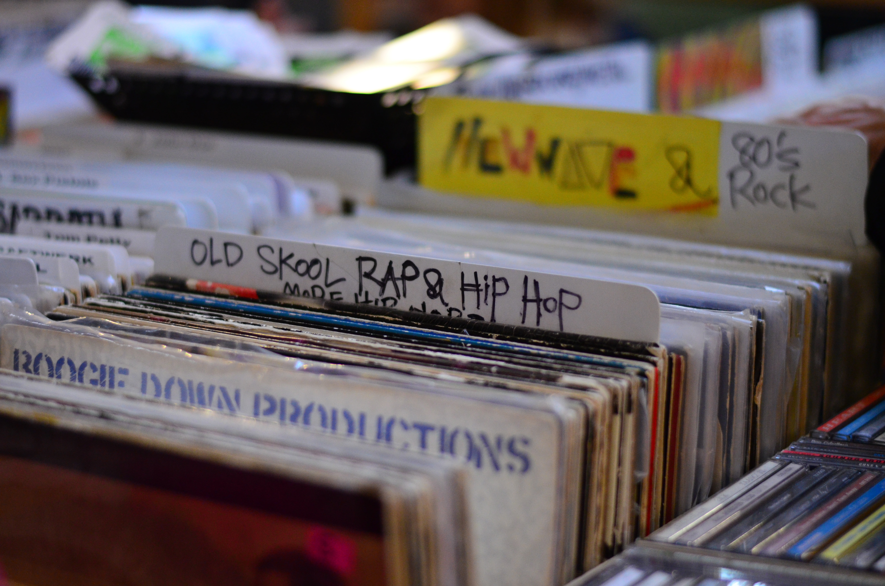

정규 앨범 활동을 마친 각나그네는 간간히 Jiggy Fellaz 앨범 등의 각종 피쳐링 참여로 모습을 보였으며 Rivers Crew의 일원으로도 활동하였다. 그가 앨범으로 돌아온 것은 2007년 여름 싱글 Yes Yes Y'all로, 이때 그의 이름은 Superman Ivy로 바뀌어있었으며, 스타일 역시 Rivers Crew의 모토대로 올드 스쿨 경향으로 바뀌었다. 이 싱글에서 그는 Dok2와 합심하여 세 트랙을 담았다. 또 이 싱글은 Foundation에서 나와 자체적으로 세운 레이블 "Superman Ivy Records"의 첫 앨범이기도 하였다.
